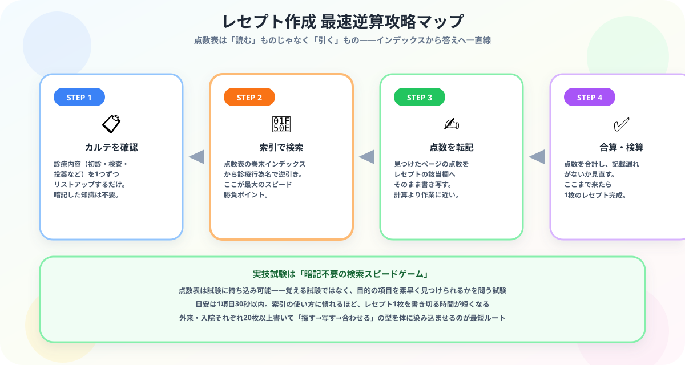

医療事務の独学合格ガイド【2026年版】資格の種類・勉強法・難易度比較
大谷 一輝 より
こんにちは、大谷です！
僕は公認会計士を目指して分厚い会計基準や条文と毎日格闘していますが、初めて医療事務の「診療点数早見表」を開いたときは、正直「うわっ、なんじゃこりゃ……電話帳みたいな分厚さの点数表、これ全部覚えるの！？」と本気でビビりました（笑）。
でも安心してください。診療報酬請求事務能力認定試験の実技試験は、この分厚い点数表を丸暗記する試験ではありません。会計士試験のように条文を頭に叩き込む世界とは違って、「必要な項目を、必要なときに、素早く引けるか」だけが問われるんです。
今日は、点数表インデックスからレセプトへ最速で答えを落とし込む逆算攻略法を、皆さんに全部お伝えします！
また、記事の末尾のほうにある【いいねボタン】をポチッと押してもらえると、めちゃくちゃ嬉しいです！
受験生
医療事務、未経験なんですけど、点数表があんなに分厚いと聞くと「全部暗記しないと受からないのでは……」って不安しかありません……。
大谷（公認会計士受験生）
その不安、めちゃくちゃわかります！でも実技試験は暗記ゲームじゃなくて「検索スピードゲーム」なんです。点数表もテキストも試験に持ち込めるので、覚える必要はゼロ。求められるのは、カルテに書かれた診療内容を、点数表の索引から30秒以内に見つけ出す速さだけ。極端に言えば、索引の引き方さえ体に染み込めば、未経験からでも十分戦えますよ！
医療事務資格の種類と難易度比較
| 資格名 | 主催 | 難易度 | 合格率 | 勉強時間 |
|---|---|---|---|---|
| 診療報酬請求事務能力認定試験 | 医療保険学会 | ★★★★ | 約30〜40% | 150〜200時間 |
| 医療事務技能審査試験（メディカルクラーク） | JMCA | ★★ | 約60〜70% | 60〜100時間 |
| 医療事務管理士技能認定試験 | JSMA | ★★ | 約50〜60% | 60〜100時間 |
| 医療事務認定実務者 | 全国医療福祉教育協会 | ★ | 約80% | 30〜50時間 |
💡 就職で最も評価されるのは：「診療報酬請求事務能力認定試験」が業界での評価が最も高く、就職・転職時に有利です。難しいですが、これ一本を目指す価値があります。
診療報酬請求事務能力認定試験の攻略法

医療事務資格の中で最難関かつ最も就職評価が高い試験です。
| 試験区分 | 内容 | 特徴 |
|---|---|---|
| 学科試験 | 医療保険制度・診療報酬の知識 | マークシート・持ち込み不可 |
| 実技試験 | レセプト作成（外来・入院） | テキスト・点数表持ち込み可 |
- 実技試験は「持ち込み可」が最大のポイント：点数表を引く速度が合否を分ける
- レセプト作成を繰り返す：外来・入院それぞれ20枚以上書くことで速度が上がる
- 点数表の引き方を練習する：目的の項目を30秒以内に見つけられるよう練習する
独学3ヶ月合格スケジュール（メディカルクラーク向け）
| 時期 | 内容 | ポイント |
|---|---|---|
| 1ヶ月目 | 医療保険制度・診療報酬の基礎を学ぶ | テキストを1周読み切る |
| 2ヶ月目 | レセプト作成の基本を練習 | 外来レセプトを毎日1枚書く |
| 3ヶ月目 | 過去問・模擬問題で仕上げ | 時間を計って本番形式で解く |
独学に向いている人・向いていない人
| 独学向き | スクール向き |
|---|---|
| 勉強の習慣がある | 働きながら効率よく取りたい |
| 費用を抑えたい | 就職サポートも欲しい |
| メディカルクラーク等の易しめの資格 | 診療報酬請求事務能力認定試験を目指す |
| 医療事務経験者 | 医療知識ゼロから始める |
⚠ 注意：医療事務は民間資格のため「絶対必要」ではありません。未経験でも資格なしで採用されることも多いです。ただし資格があると選考で有利になります。
おすすめテキスト
- 「ひとりで学べる診療報酬請求事務能力認定試験」（成美堂出版）：独学の定番テキスト。解説が丁寧でレセプト作成の手順が分かりやすい
- 「医療事務の仕事がわかる本」：業務内容の全体像を把握するのに最適
- 「診療点数早見表」（医学通信社）：実技試験の必携。試験本番にも持参できる
まとめ
- 医療事務資格は複数あり、就職で評価が高いのは「診療報酬請求事務能力認定試験」
- 初心者は「メディカルクラーク」から始めるのがおすすめ
- 実技試験はレセプト作成の反復練習が合否を決める
- 点数表の引き方を速くすることが最大の対策
- 独学でも3ヶ月の集中学習で合格圏に入れる
🩺
未経験から医療事務に挑戦するあなたを、心から応援しています
分厚い点数表を見て怖気づく必要はありません。暗記ではなく「探して、写して、合わせる」の反復練習さえ積めば、未経験でも確実に手が届く試験です。この記事が「あ、そういうことか！」につながったら、僕の執筆のモチベーション維持のために、この下にある【いいねボタン】をポチッと押してもらえると、めちゃくちゃ嬉しいです！
Study Questで今日の学習時間を記録して、レセプト作成マスターへの一歩を刻んでおきましょう。